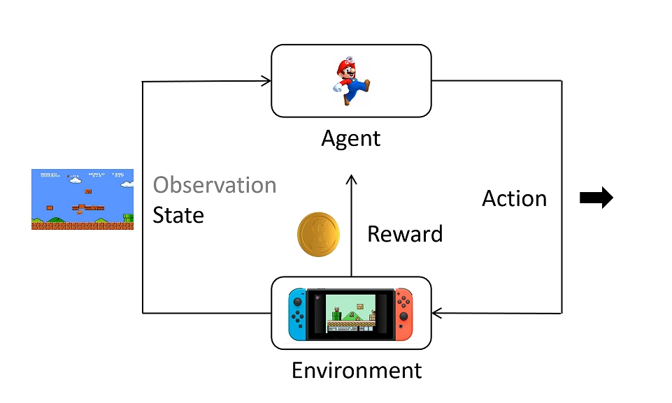

PPO
Policy 训练初步
强化学习基础：

- environment
- agent
- state
- action
- reward
- action space：可选择的 action 集合
- policy：策略函数，用 $\pi$ 表示，输入为 state，输出为 action 的概率分布，
- trajectory：轨迹，一连串 state 和 action 的序列，用 $\tau$ 表示
- return：累积奖励，即 trajectory 中所有 reward 的和，用 $R$ 表示
强化学习的最终目标是：用神经网络模拟一个 policy $\pi$，使得 return 期望最大。
Note
训练和推理时根据概率分布采样 action，而不是直接选择概率最大的 action。
统计学基础：
期望：
$$E(x)_{x\sim p(x)}=\sum\limits_{x}x\cdot p(x)\approx\frac{1}{n}\sum\limits_{i=1}^nx_i,x_i\sim p(x)$$
数学描述——梯度法：
设 trajectory $\tau$ 服从分布 $P_{\theta}(\tau)$，其中 $\theta$ 为 policy 的参数，trajectory 由 policy 决定，上述目标中提到的期望表示为：
$$E[R(\tau)]_{\tau\sim P_{\theta}(\tau)}=\sum\limits_{\tau}R(\tau)P_{\theta}(\tau)$$
如何让上述期望最大化？我们只需要让其沿梯度的方向上升即可。因此，需要对 $\theta$ 求梯度：
$$ \begin{align} \nabla E[R(\tau)]_{\tau\sim P_{\theta}(\tau)} &= \nabla\sum\limits_{\tau}R(\tau)P_{\theta}(\tau) \\ &= \sum\limits_{\tau}R(\tau)\nabla P_{\theta}(\tau) \\ &= \sum\limits_{\tau}P_{\theta}(\tau)R(\tau)\frac{\nabla P_{\theta}(\tau)}{P_{\theta}(\tau)} \\ &\approx \frac{1}{N}\sum\limits_{n=1}^NR(\tau^n)\frac{\nabla P_{\theta}(\tau^n)}{P_{\theta}(\tau^n)} \\ &= \frac{1}{N}\sum\limits_{n=1}^NR(\tau^n)\nabla[\log(P_{\theta}(\tau^n))], \tau\sim P_{\theta}(\tau) \end{align} $$
Note
$\approx$ 的部分基于蒙特卡洛采样。
对于一条确定的 trajectory 的概率分布，有：
$$P_{\theta}(\tau)=P(s_1)P_{\theta}(a_1|s_1)P(s_2|s_1,a_1)P_{\theta}(a_2|s_2)P(s_3|s_2,a_2)\dots=P(s_1)\prod\limits_{t=1}^TP_{\theta}(a_t|s_t)P(s_{t+1}|s_t,a_t)$$
Note
这里不带下标的 $P$ 由 environment 决定。
这里 $s$ 和 $a$ 的下标并不是确定的第几号 state/action，而是表示在这个 trajectory 中的第几个 state/action。
因此，上式可以继续变形。取对数后变成加法，如果求导只关注和 $\theta$ 有关的部分：
$$ \begin{align} \nabla E(R(\tau))_{\tau\sim P_{\theta}(\tau)} &= \frac{1}{N}\sum\limits_{n=1}^NR(\tau^n)\sum\limits_{t=1}^{T_n}R(\tau_n)\nabla[\log(P_{\theta}(a_t^n|s_t^n))] \\ &= \frac{1}{N}\sum\limits_{n=1}^N\sum\limits_{t=1}^{T_n}R(\tau^n)\nabla[\log(P_{\theta}(a_t^n|s_t^n))] \end{align} $$
如果我们去掉 $\nabla$，那么 $\frac{1}{N}\sum\limits_{n=1}^N\sum\limits_{t=1}^{T_n}R(\tau^n)\log(P_{\theta}(a_t^n|s_t^n))$ 和最开始的原函数 $E[R(\tau)]_{\tau\sim P_{\theta}(\tau)}$ 虽然不完全等价，但是它们的梯度是相等的，更新方向一致，因此我们可以直接用前者来研究优化问题，将其视为简化的目标函数。
我们来看一下这个目标函数的形式：
$$\frac{1}{N}\sum\limits_{n=1}^N\sum\limits_{t=1}^{T_n}R(\tau^n)\log(P_{\theta}(a_t^n|s_t^n))$$
它由两部分组成。第一部分是对应 trajectory 的 return，第二部分是某个 state 下选择某个 action 的概率（取对数）。
我们要让这个目标函数最大化是什么意思？就是当 return 为正时，我们希望让对应的 action 被选中的概率更大一些；当 return 为负时，我们希望让对应的 action 被选中的概率更小一些。
policy 训练：
为了贴合一般形式的梯度下降，对上述目标函数稍加变换：
$$\text{Loss} = -\frac{1}{N}\sum\limits_{n=1}^N\sum\limits_{t=1}^{T_n}R(\tau^n)\log(P_{\theta}(a_t^n|s_t^n))$$
使用 policy 跑 $N$场游戏，得到 $N$ 条 trajectory，每条 trajectory 有 $T_n$ 个 state-action 对，以及对应的 return $R(\tau^n)$。
因此，损失函数所有组成成分已知，可以进行反向传播求得梯度，更新神经网络参数 $\theta$。
Policy 训练改进
return 改进：
问题1：
对于某个 state 下采取某个 action，其对应的 reward 并不应该是整个 trajectory 的 return，而是看采取了这个 action 之后的影响，因为其只会对后续的 reward 产生影响。此外，后面越远的 reward 影响越小：
$$R(\tau^n)\rightarrow R_t^n=\sum\limits_{t'=t}^{T_n}\gamma^{t'-t}r_{t'}^n$$
问题2：
假设无论采取什么 action，环境都会给出一个正的 reward，那么算法就会增加所有 action 的概率，对应 reward 更大的 action，概率增加得更大，但是这样会让训练很慢。最好能让相对好的 action 概率增加，相对不好的 action 概率减少。因此，对 return 引入 baseline：
$$R_t^n\rightarrow R_t^n - B(s_t^n)$$
综上，梯度修改为：
$$\frac{1}{N}\sum\limits_{n=1}^N\sum\limits_{t=1}^{T_n}[R_t^n-B(s_t^n)]\nabla[\log(P_{\theta}(a_t^n|s_t^n))]$$
新概念引入：
- action-value function：记为$Q_{\theta}(s,a)$，表示在 state $s$ 下采取 action $a$，期望的 return 是多少
- state-value function：记为$V_{\theta}(s)$，表示在 state $s$ 下，无论采取任何 action，期望的 return 是多少
- advantage function：记为$A_{\theta}(s,a)=Q_{\theta}(s,a)-V_{\theta}(s)$，表示在 state $s$ 下采取 action $a$，相对于平均水平的优势是多少
因此，advantage function 实际上表示的就是上面的$R_t^n-B(s_t^n)$：
$$\frac{1}{N}\sum\limits_{n=1}^N\sum\limits_{t=1}^{T_n}A_{\theta}(s_t^n,a_t^n)\nabla[\log(P_{\theta}(a_t^n|s_t^n))]$$
Generalized Advantage Estimation (GAE):
对 advantage function 进行研究：
$$A_{\theta}(s,a)=Q_{\theta}(s,a)-V_{\theta}(s)$$
设当前一步得到的 reward 为 $r_t$，则有
$$Q_{\theta}(s_t,a)=r_t+\gamma*V_{\theta}(s_{t+1})$$
代回 advantage function：
$$A_{\theta}(s_t,a)=r_t+\gamma*V_{\theta}(s_{t+1})-V_{\theta}(s_t)$$
此时的 advantage function 只和 state-value function 有关。
因此，原本我们需要两个神经网络，分别拟合 $Q_{\theta}(s,a)$ 和 $V_{\theta}(s)$，现在只需要一个神经网络拟合 $V_{\theta}(s)$，然后计算 $A_{\theta}(s_t,a)$。
此外
$$V_{\theta}(s_{t+1})\approx r_{t+1}+\gamma*V_{\theta}(s_{t+2})$$
Note
这里的约等于是因为$r_{t+1}$是不确定的。
因此，advantage function 可以多步采样：
$$A_{\theta}^1(s_t,a)=r_t+\gamma*V_{\theta}(s_{t+1})-V_{\theta}(s_t)$$
$$A_{\theta}^2(s_t,a)=r_t+\gamma*r_{t+1}+\gamma^2*V_{\theta}(s_{t+2})-V_{\theta}(s_t)$$
$$A_{\theta}^3(s_t,a)=r_t+\gamma*r_{t+1}+\gamma^2*r_{t+2}+\gamma^3*V_{\theta}(s_{t+3})-V_{\theta}(s_t)$$
$$\dots$$
$$A_{\theta}^T(s_t,a)=r_t+\gamma*r_{t+1}+\gamma^2*r_{t+2}+\gamma^3*r_{t+3}+\dots+\gamma^{T-1}*r_{t+T-1}-V_{\theta}(s_t)$$
我们使用以下符号进行简记：
$$\delta_t^V=r_t+\gamma*V_{\theta}(s_{t+1})-V_{\theta}(s_t)$$
因此，advantage function 可以表示为：
$$A_{\theta}^1(s_t,a)=\delta_t^V$$
$$A_{\theta}^2(s_t,a)=\delta_t^V+\gamma*\delta_{t+1}^V$$
$$A_{\theta}^3(s_t,a)=\delta_t^V+\gamma*\delta_{t+1}^V+\gamma^2*\delta_{t+2}^V$$
$$\dots$$
$$A_{\theta}^T(s_t,a)=\delta_t^V+\gamma*\delta_{t+1}^V+\gamma^2*\delta_{t+2}^V+\dots+\gamma^{T-1}*\delta_{t+T-1}^V$$
如果所有的采样次数都考虑，但是给更远的采样更小的权重：
$$ \begin{align} A_{\theta}^{GAE}(s_t,a) &= (1-\lambda)(A_{\theta}^1+\lambda*A_{\theta}^2+\lambda^2*A_{\theta}^3+\dots) \\ &= (1-\lambda)(\delta_t^V + \lambda*(\delta_t^V+\gamma*\delta_{t+1}^V)+ \lambda^2*(\delta_t^V+\gamma*\delta_{t+1}^V+\gamma^2*\delta_{t+2}^V)+\dots) \\ &= (1-\lambda)(\delta_t^V(1+\lambda+\lambda^2+\dots)+\gamma\delta_{t+1}^V*(\lambda+\lambda^2+\dots)+\dots) \\ &= (1-\lambda)(\delta_t^V\frac{1}{1-\lambda}+\gamma*\delta_{t+1}^V\frac{\lambda}{1-\lambda}+\gamma^2*\delta_{t+2}^V\frac{\lambda^2}{1-\lambda}+\dots) \\ &= \sum\limits_{b=0}^{\infty}(\gamma\lambda)^b\delta_{t+b}^V \end{align} $$
改进后的算法：
$$\delta_t^V=r_t+\gamma*V_{\theta}(s_{t+1})-V_{\theta}(s_t)$$
$$A_{\theta}^{GAE}(s_t,a) = \sum\limits_{b=0}^{\infty}(\gamma\lambda)^b\delta_{t+b}^V$$
$$\text{gradient}=\frac{1}{N}\sum\limits_{n=1}^N\sum\limits_{t=1}^{T_n}A_{\theta}^{GAE}(s_t^n,a_t^n)\nabla[\log(P_{\theta}(a_t^n|s_t^n))]$$
其中，$V_{\theta}$ 和 $P_{\theta}$ 都是用神经网络来拟合的，一般可共用参数，在最后一层不同。
PPO
全称： Proximal Policy Optimization，邻近策略优化
重要性采样：
策略分为 on-policy 和 off-policy 两种。on-policy 采集数据所用模型和要训练的模型是同一个；而 off-policy 不然。例如，老师根据一名同学的行为进行奖励或惩罚，这名同学自己调整行为则为 on-policy；而其他同学根据这名同学的奖惩情况调整自己的行为则为 off-policy。
原本我们的 policy 训练是 on-policy 的，现在，PPO 想要利用 off-policy 的数据来训练 policy。
如果我们想要求$f(x)$的期望：
$$ \begin{align} E[f(x)]_{x\sim p(x)} &= \sum\limits_xf(x)p(x) \\ &= \sum\limits_xf(x)\cdot\frac{p(x)}{q(x)}\cdot q(x) \\ &= E[f(x)\frac{p(x)}{q(x)}]_{x\sim q(x)} \\ &\approx \frac{1}{N}\sum\limits_{n=1}^N[f(x)\frac{p(x)}{q(x)}], x\sim q(x) \end{align}$$
实质上，是更换了原本的采样分布。因此，原本的目标函数的梯度公式也可以用重要性采样来改写：
$$ \begin{align} \text{gradient} &= \frac{1}{N}\sum\limits_{n=1}^N\sum\limits_{t=1}^{T_n}A_{\theta}^{GAE}(s_t^n,a_t^n)\nabla[\log(P_{\theta}(a_t^n|s_t^n))] \\ &\rightarrow \frac{1}{N}\sum\limits_{n=1}^N\sum\limits_{t=1}^{T_n}A_{\theta'}^{GAE}(s_t^n,a_t^n)\frac{P_{\theta}(a_t^n|s_t^n)}{P_{\theta'}(a_t^n|s_t^n)}\nabla[\log(P_{\theta}(a_t^n|s_t^n))] \end{align} $$
其中，$A_{\theta'}^{GAE}(s_t^n,a_t^n)$ 是观测到其他 policy 的数据后计算得到的 advantage function，用 $\nabla[\log(P_{\theta}(a_t^n|s_t^n))]$ 来更新当前 policy，引入 $\frac{P_{\theta}(a_t^n|s_t^n)}{P_{\theta'}(a_t^n|s_t^n)}$ 来修正分布差异带来的影响。
我们可以对 $\nabla[\log(P_{\theta}(a_t^n|s_t^n))]$ 进行还原：
$$ \begin{align} \text{gradient} &= \frac{1}{N}\sum\limits_{n=1}^N\sum\limits_{t=1}^{T_n}A_{\theta'}^{GAE}(s_t^n,a_t^n)\frac{P_{\theta}(a_t^n|s_t^n)}{P_{\theta'}(a_t^n|s_t^n)}\frac{\nabla [P_{\theta}(a_t^n|s_t^n)]}{P_{\theta}(a_t^n|s_t^n)} \\ &= \frac{1}{N}\sum\limits_{n=1}^N\sum\limits_{t=1}^{T_n}A_{\theta'}^{GAE}(s_t^n,a_t^n)\frac{\nabla [P_{\theta}(a_t^n|s_t^n)]}{P_{\theta'}(a_t^n|s_t^n)} \end{align} $$
类似地，还原出简化的目标函数：
$$\text{Loss} = -\frac{1}{N}\sum\limits_{n=1}^N\sum\limits_{t=1}^{T_n}A_{\theta'}^{GAE}(s_t^n,a_t^n)\frac{P_{\theta}(a_t^n|s_t^n)}{P_{\theta'}(a_t^n|s_t^n)}$$
这样，我们就把 on-policy 的目标函数变成了 off-policy 的目标函数，这个时候其他策略采集得到的数据就可以多次利用了。
进一步约束：
观测的 policy 和自身的 policy 给出的各种 action 概率分布差别不能太大，不然训练效果不好。例如，老师批评坏学生考试交白卷，但如果是好学生观测并学习，这是没有意义的，因为好学生出现交白卷的 action 的概率几乎为 0。
添加的约束就是 KL 散度，是描述两个概率分布相似程度的量化指标。分布完全一致则为 0，差别越大则 KL 散度越大。
$$\text{Loss} = -\frac{1}{N}\sum\limits_{n=1}^N\sum\limits_{t=1}^{T_n}A_{\theta'}^{GAE}(s_t^n,a_t^n)\frac{P_{\theta}(a_t^n|s_t^n)}{P_{\theta'}(a_t^n|s_t^n)} + \beta KL(P_{\theta},P_{\theta'})$$
还有一种使用 clip截断函数的形式。$clip(a,b,c)$ 表示：当 $a<b$ 时，输出 $b$；当 $a>c$ 时，输出 $c$；否则输出 $a$。
$$\text{Loss}= -\frac{1}{N}\sum\limits_{n=1}^N\sum\limits_{t=1}^{T_n}\min\{A_{\theta'}^{GAE}(s_t^n,a_t^n)\frac{P_{\theta}(a_t^n|s_t^n)}{P_{\theta'}(a_t^n|s_t^n)},A_{\theta'}^{GAE}(s_t^n,a_t^n)clip\left(\frac{P_{\theta}(a_t^n|s_t^n)}{P_{\theta'}(a_t^n|s_t^n)},1-\epsilon,1+\epsilon\right)\}$$